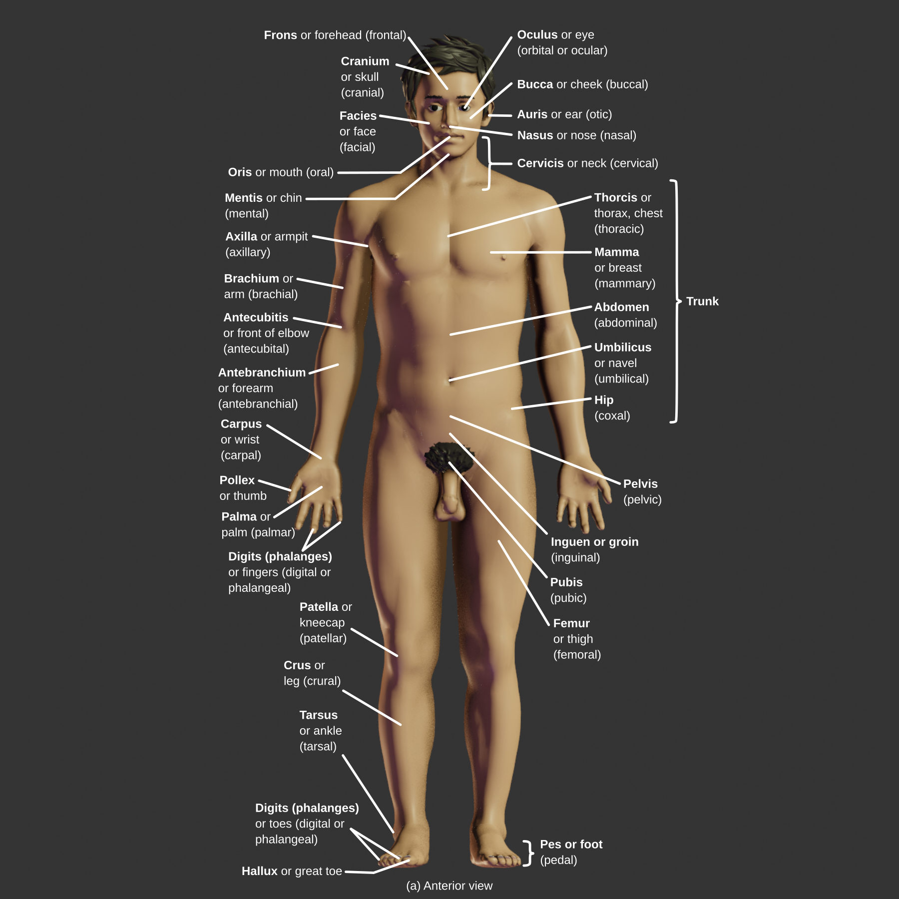
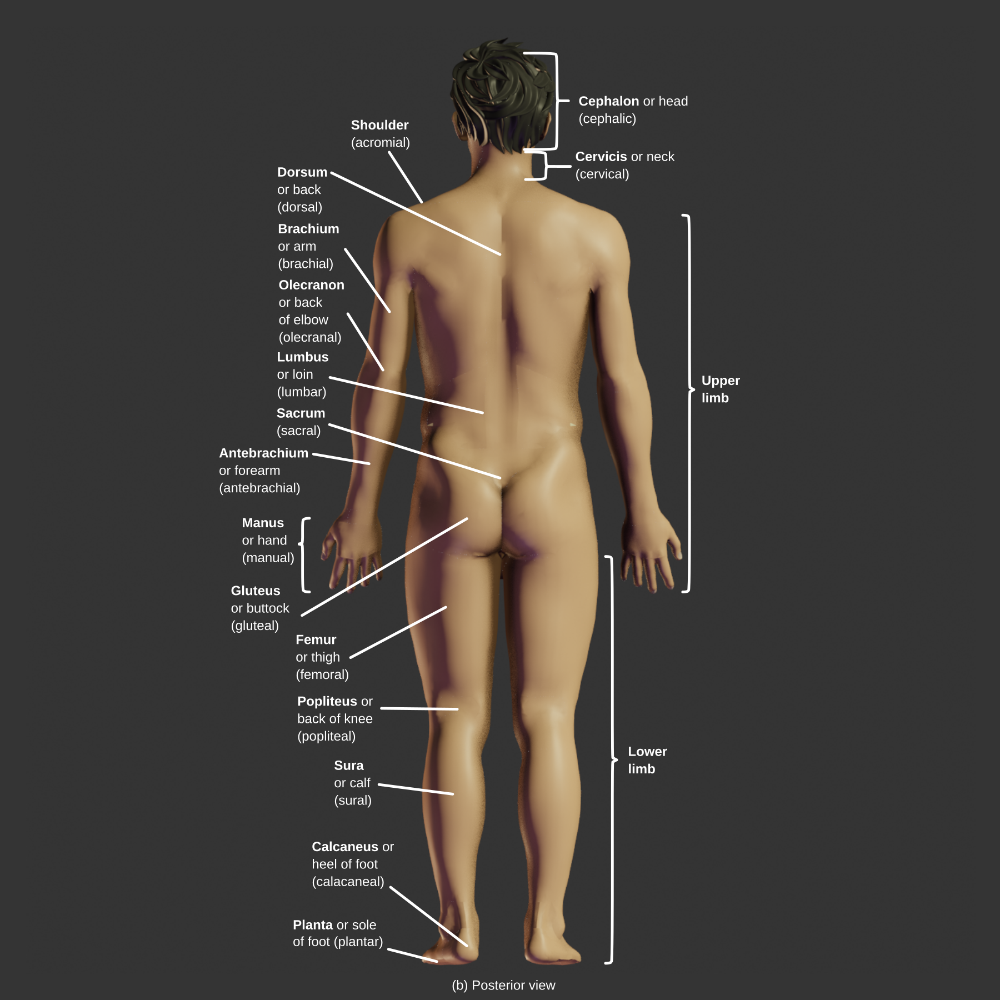

Anatomy & Physiology - English
Anatomy of the surface regions of the body
(a) Anterior view
(b) Posterior View
Citations
- Betts, J. G., Young, K. A., Wise, J. A., Johnson, E., Poe, B., Kruse, D. H., Korol, O., Johnson, J. E., Womble, M., & DeSaix, P. (2022). An Introduction to the Human Body. In Anatomy and Physiology 2e . OpenStax. https://openstax.org/books/anatomy-and-physiology-2e/pages/1-6-anatomical-terminology
Attributions
- "BodyParts3D, © The Database Center for Life Science licensed under CC Attribution-Share Alike 2.1 Japan"
- modified and completed by "Z-Anatomy.com - The open source atlas of human anatomy"